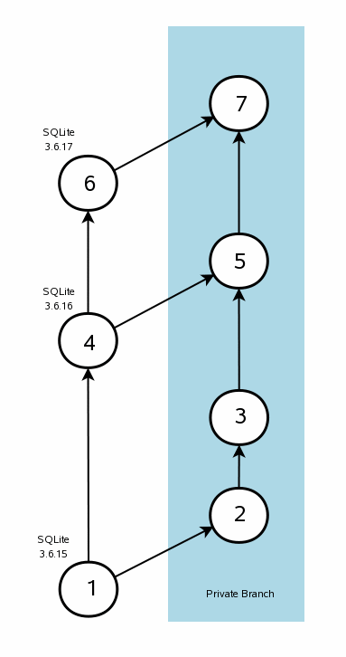

由WaterRun使用gpt-5.1-codex-mini翻译
小巧。快速。可靠。
任选其三。
任选其三。
SQLite 旨在满足大多数开发者的需求，无需做任何更改或自定义。需要更改时，通常可以通过启动时的 (1) 或运行时的 (2) (3) (4) 配置方法 或通过 编译时选项 完成。应用程序开发者很少需要编辑 SQLite 源代码就能将 SQLite 集成到产品中。
我们将仅供单个应用程序使用并对 SQLite 源代码所做的自定义修改称为“私有分支”。当需要私有分支时，应用程序开发者必须自己负责将私有分支与公开的 SQLite 源保持同步。这是一个繁琐的工作。它也可能很棘手，因为虽然 SQLite 的文件格式和已发布接口非常稳定，但其内部实现变化很快。任何一个 SQLite 的点发布都可能改动数百甚至数千行代码。
这篇文章概述了让私有分支与公开 SQLite 源同步的一种可能方法。当然，维护私有分支有很多方式。没人被迫必须使用这里描述的方法。本文并不是试图向私有分支的维护者强加某个特定流程。本文的目的是提供一个维护私有分支流程的示例，作为设计更适合各个项目实际情况流程的模板。

我们建议使用 Fossil 软件配置管理 系统来设置两个分支。一个分支（“公开分支”或“主干”）包含公开发布的 SQLite 源，而另一个分支是包含为项目定制代码的私有分支。每当一个新的公开 SQLite 发布出来时，将其添加到公开分支，然后将这些更改合并到私有分支。
本文建议使用 Fossil， 但任何其他分布式软件配置管理系统，例如 monotone 或 mercurial（也称为 “hg”），或 git 同样可以胜任。 概念是相同的，尽管流程细节会有所不同。
右侧的图示说明了该概念。首先以标准的 SQLite 版本开始。举例来说，假设计划从 SQLite 版本 3.6.15 创建一个私有分支。在图中，这是标记为 (1) 的版本。维护者将基线 SQLite 精确复制到分支空间，如图中的 (2)。注意 (1) 和 (2) 是完全相同的。然后维护者将私有更改应用到版本 (2)，得到版本 (3)。换句话说，版本 (3) 是在 SQLite 3.6.15 基础上加上了编辑的结果。
之后，SQLite 版本 3.6.16 发布了，如图中的圆 (4) 所示。此时，私有分支维护者会执行一次合并，把从 (1) 到 (4) 的所有更改应用到 (3)。结果是版本 (5)，即 SQLite 3.6.16 加上自定义修改。
可能会出现合并冲突。也就是说，从 (2) 到 (3) 的更改可能与从 (1) 到 (4) 的更改不兼容。在这种情况下，维护者需要手动解决冲突。希望这类冲突不会经常发生。当私有修改保持最小化时，冲突的可能性更小。
上述循环可以重复多次。图中还展示了第三个 SQLite 发布版本，即圆 (6) 的 3.6.17。私有分支维护者可以再次合并，以便将从 (4) 到 (6) 的更改引入私有分支，从而得到版本 (7)。
本文余下部分将引导读者完成维护私有分支所需的步骤。总体思路与上述相同，本节仅提供更多细节。
我们再次强调，这些步骤并不意味着是维护私有分支的唯一可接受方式。这种方法只是众多方法中的一种。以本文作为准备项目特定流程的基线。不要害怕去尝试变通。
Fossil 是一个在使用前必须安装到机器上的程序。幸运的是，安装 Fossil 非常简单。Fossil 是一个单一的“*.exe”文件，下载并运行即可。要卸载 Fossil，只需删除该 exe 文件。有关安装及入门的详细说明可以在Fossil 网站上找到。
使用以下命令创建一个 Fossil 仓库来托管私有分支：
fossil new private-project.fossil
项目名称可以随意。后缀 ".fossil" 是可选的。本文继续将项目称为 "private-project.fossil"。注意，private-project.fossil 是一个普通的磁盘文件（实际上是 SQLite 数据库），它包含完整的项目历史。只需复制该文件即可备份整个项目。
如果想配置新项目，请输入：
fossil ui private-project.fossil
“ui”命令会令 Fossil 运行一个迷你内置网络服务器并启动浏览器，指向该服务器。你可以使用浏览器以多种方式配置项目。更多说明请参阅 Fossil 网站。
仓库创建完成后，通过切换到存放源代码的目录，并输入以下命令来创建一个打开的签出：
fossil open private-project.fossil
你可以创建同一项目的多个签出，也可以将仓库“克隆”到不同机器以供多位开发者使用。详情请查看 Fossil 网站。
前一步创建的仓库最初是空的。下一步是加载基线 SQLite 发布——即上图中的圆 (1)。
首先获取一份你实际使用形式的 SQLite 拷贝。公开的 SQLite 拷贝应该尽可能接近你私有修改的版本。如果项目使用 SQLite 合并体，就获取合并体；如果使用预处理的独立源文件，则获取那些文件。将所有源文件放在上一步创建的签出目录中。
公开 SQLite 发布的源代码使用的是 UNIX 换行（ASCII 码 10：“换行”，仅 NL）并用空格替代制表符。如果你打算将换行改为 Windows 风格（ASCII 码 13, 10：“回车-换行”，CR-NL），或将空格缩进改为制表符缩进，请在提交基线之前立即完成这些更改。如果公共分支与私有分支之间的差异过大，例如由于将 NL 改为 CR-NL 而导致私有分支中每一行源文件都不同，那么合并流程就无法正常工作。
假设你正在使用合并体源代码。将基线添加到项目中，如下所示：
fossil add sqlite3.c sqlite3.h
如果使用独立源文件，请列出所有源文件而不仅仅是两个合并体文件。完成后，用以下命令提交更改：
fossil commit
系统会提示你输入一次提交说明，随意写即可。提交完成后，基线就成为仓库的一部分。如果想在“时间线”中查看，可以运行：
fossil ui
上一个命令与之前运行的“ui”相同。它会启动一个迷你 Web 服务器并将浏览器指向它。但这次我们不需要指定仓库文件，因为当前已经在签出目录中，Fossil 可以自行识别仓库。你也可以手动在命令中第二个参数指定仓库文件，这完全可选。
如果不想在浏览器中查看新提交，可以通过以下命令在命令行获取信息：
fossil timeline fossil info fossil status
前一步创建了图中的圆 (1)。此步将创建圆 (2)。运行以下命令：
fossil branch new private trunk -bgcolor "#add8e8"
该命令会创建一个名为“private”的新分支（你也可以使用其他名称），并赋予浅蓝色背景（“#add8e8”）。如果愿意可以省略背景色，不过有明显背景有助于在时间线显示中区分该分支与“主干”（公共分支）。你也可以在 Web 界面中更改私有分支或公共分支（“主干”）的背景色。
上述命令创建了新分支。但当前签出仍在主干——可通过运行以下命令看到：
fossil info
要切换到私有分支，请输入：
fossil update private
你可以再次运行“info”命令以确认当前在私有分支。若要返回公共分支，请输入：
fossil update trunk
通常在私有分支与公共分支之间切换时，Fossil 会修改签出中的所有文件。但此时两个分支的文件仍然相同，因此无需修改。
现在是对 SQLite 进行私有自定义的时间了，这也是本练习的核心。切换到私有分支（如果尚未在其上），使用 "fossil update private" 命令，然后在文本编辑器中打开源文件并进行所有希望的更改。完成后，使用以下命令提交这些更改：
fossil commit
系统会再次提示输入描述所做更改的提交信息。然后提交会发生。该提交在仓库中生成一个对应于图中圆 (3) 的检查点。
现在公共分支和私有分支已经不同，你可以运行 "fossil update trunk" 和 "fossil update private" 命令，观察 Fossil 在分支之间切换时确实会更改签出中的文件。
请注意，上图中的私有编辑表示为一次提交，仅仅是为了演示清晰。你完全可以执行几十甚至上百次独立的小更改并分别提交。事实上，进行多个小改动是推荐的方式。将所有更改合并在一个提交中仅仅是为了方便绘图。
假设过一段时间（通常约一个月）发布了新版本 SQLite：3.6.16。你希望将这个新的公开 SQLite 版本引入公开分支（主干）的仓库中。首先切换仓库到主干：
fossil update trunk
然后下载新的 SQLite 源并覆盖签出中的文件。
如果在原始基线中做了 NL 到 CR-NL 的换行更改或空格到制表符的缩进更改，也请在新源文件上做同样的更改。
一切准备就绪后，运行 "fossil commit" 命令提交这些更改。这就创建了图中的圆 (4)。
下一步是将公开分支中的更改移入私有分支。换句话说，我们要创建图中的圆 (5)。首先切换到私有分支，使用 "fossil update private"。然后输入：
fossil merge trunk
“merge”命令会尝试将从圆 (1) 到 (4) 的所有更改应用到本地签出的文件。注意圆 (5) 尚未创建。你需要运行“commit”来生成圆 (5)。
合并过程中可能会出现冲突。当相同的代码行在 (1) 到 (4) 与 (2) 到 (3) 之间以不同方式修改时，就会发生冲突。合并命令会提示冲突，并在输出中包含冲突行的两个版本。你需要打开包含冲突的文件并手动解决冲突。
解决冲突后，许多用户喜欢在提交前先编译并测试新版本。你也可以先提交再测试。无论哪种方式，运行 "fossil commit" 命令将圆 (5) 版本提交到仓库。
随着新的 SQLite 版本发布，重复第 3.6 节和第 3.7 节的步骤，将新版本的更改加入私有分支。如果需要，也可以在两个版本之间在私有分支上做额外的私有修改。
自本文首次编写以来，SQLite 的规范源代码已从古老的 CVS 系统迁移到位于 https://sqlite.org/src 的 Fossil 仓库。这意味着如果你正在使用规范的 SQLite 源代码（而不是合并体源文件 sqlite3.c 和 sqlite3.h），你可以直接克隆官方仓库来创建私有仓库：
fossil clone https://sqlite.org/src private-project.fossil
该命令同时创建新仓库并填充所有最新的 SQLite 代码。然后可以按照第 3.4 节说明创建私有分支。
当通过克隆创建私有仓库时，合并新的公开 SQLite 发布也变得更简单。只需进入打开的签出并执行：
fossil update
然后继续按照第 3.7 节描述的方式将 “trunk” 中的更改与 “private” 中的更改合并。
本页最后更新于 2025-05-31 13:08:22Z